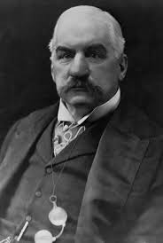

John Pierpont Morgan fue un banquero, empresario y coleccionista de arte estadounidense que tuvo un gran poder en las finanzas y la industria de finales del siglo XIX y principios del XX. Se destacó por organizar y financiar grandes fusiones empresariales que dieron origen a compañías gigantes. Entre ellas, creó General Electric en 1891 mediante la unión de empresas eléctricas, y en 1901 impulsó la creación de U.S. Steel, resultado de la fusión de Carnegie Steel con otras siderúrgicas. También participó en la formación de grandes trusts financieros y navieros, como la International Mercantile Marine Company. Su influencia fue tan grande que llegó a dominar buena parte de la economía industrial estadounidense de su época, convirtiéndose en uno de los hombres más ricos del mundo hacia 1901. Además de sus negocios, fue un importante coleccionista de arte, cuya colección fue donada en gran parte al Museo Metropolitano de Arte de Nueva York. Murió en 1913 en Roma, dejando su fortuna a su hijo.
J. P. Morgan comenzó su carrera en 1857 trabajando en la empresa de su padre en Londres y luego se trasladó a Nueva York, donde pasó por varias firmas financieras hasta fundar asociaciones propias como Dabney, Morgan & Company. Con el tiempo, estas se transformaron en J. P. Morgan & Co., una de las instituciones bancarias más importantes del mundo hacia 1900. Durante la Guerra Civil estadounidense participó en operaciones financieras controvertidas relacionadas con la compra y reventa de armas, aunque su papel fue principalmente el de intermediario financiero. También evitó el servicio militar pagando una suma de dinero, algo común entre personas adineradas de la época. Morgan destacó por su capacidad para reorganizar y financiar grandes empresas en problemas, especialmente en el sector ferroviario. A lo largo de su carrera, ayudó a consolidar y modernizar múltiples compañías de trenes en Estados Unidos, impulsando un sistema más integrado y eficiente. Su influencia creció aún más al participar en grandes fusiones industriales y financieras, lo que lo convirtió en una figura clave de la economía estadounidense. Además, tuvo un papel importante en la estabilización de mercados y en la coordinación entre empresas tras leyes que regulaban el comercio. También financió proyectos tecnológicos como el experimento de Nikola Tesla relacionado con la Torre Wardenclyffe, aunque retiró su apoyo cuando el proyecto no mostró resultados rápidos. Gracias a su poder financiero y su capacidad de reorganización empresarial, Morgan se convirtió en uno de los banqueros más influyentes de su época.